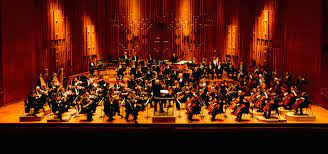

London Symphony Orchestra (LSO)
The London Symphony Orchestra (LSO) is a British symphony orchestra based in London. Founded in 1904, the LSO is the oldest of London's symphony orchestras. The LSO was set up by a group of players who left Henry Wood's Queen's Hall Orchestra because of a new rule requiring players to give the orchestra their exclusive services. The LSO itself later introduced a similar rule for its members. From the outset the LSO was organised on co-operative lines, with all players sharing the profits at the end of each season. This practice continued for the orchestra's first four decades.
The LSO underwent periods of eclipse in the 1930s and 1950s when it was regarded as inferior in quality to new London orchestras, to which it lost players and bookings: the BBC Symphony Orchestra and the London Philharmonic Orchestra in the 1930s and the Philharmonia and Royal Philharmonic after the Second World War. The profit-sharing principle was abandoned in the post-war era as a condition of receiving public subsidy for the first time. In the 1950s the orchestra debated whether to concentrate on film work at the expense of symphony concerts; many senior players left when the majority of players rejected the idea. By the 1960s the LSO had recovered its leading position, which it has retained subsequently. In 1966, to perform alongside it in choral works, the orchestra established the LSO Chorus, originally a mix of professional and amateur singers, later a wholly amateur ensemble.
As a self-governing body, the orchestra selects the conductors with whom it works. At some stages in its history it has dispensed with a principal conductor and worked only with guests. Among conductors with whom it is most associated are, in its early days, Hans Richter, Sir Edward Elgar, and Sir Thomas Beecham, and in more recent decades Pierre Monteux, André Previn, Claudio Abbado, Sir Colin Davis, and Valery Gergiev.
Since 1982, the LSO has been based in the Barbican Centre in the City of London. Among its programmes there have been large-scale festivals celebrating composers as diverse as Berlioz, Mahler and Bernstein. The LSO claims to be the world's most recorded orchestra; it has made gramophone recordings since 1912 and has played on more than 200 soundtrack recordings for the cinema, of which the best known include the Star Wars series. The LSO is consistently ranked as one of the world's leading orchestras.